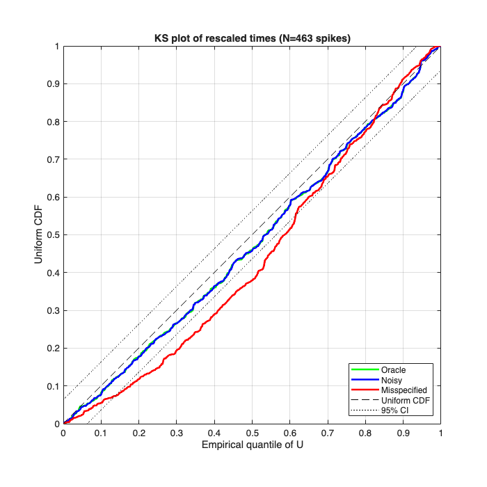

Validating Foundation-Model Decoders with nSTAT's Time-Rescaling KS Test
Thesis 2 of the Cajigas Lab Curriculum (chapter-04 point-processes, section 4.B.10): LFADS, NDT, NDT2, NDT3, POYO, POYO+, and POSSM all minimize the same Poisson NLL as a classical PP-GLM -- they differ only in the function class parameterizing log(lambda). Consequently, the time-rescaling KS test of Brown, Barbieri, Ventura, Kass, and Frank 2002 (section 4.B.3) applies unchanged to any model that emits a predicted rate. nSTAT is the reference MATLAB implementation of that test.
This tutorial demonstrates the pipeline end-to-end using a synthetic rate-predicted-by-noisy-estimator stand-in for a transformer checkpoint. The pattern is identical for a real transformer:
- Get the model's output rate lambda_hat_t on a held-out spike train.
- Wrap rates as an nSTAT Covariate.
- Wrap spike times as an nSTAT nspikeTrain.
- Call Analysis.computeKSStats(nst, lambda, DTCorrection).
- Compare the KS statistic to the 1.36/sqrt(N) band; deviations diagnose where the rate prediction is wrong.
Contents
Step 1 -- simulate a ground-truth Poisson spike train
Generate a spike train from a known inhomogeneous-Poisson rate function. In a real validation, this would be your held-out experimental data; here we use simulation so we know the true rate and can compare against perfect, near-perfect, and corrupted predictions.
rng(0, 'twister'); T = 60.0; % 60 seconds of data sampleRate = 1000; % 1 kHz (1 ms bins) delta = 1/sampleRate; t = (0:delta:T-delta)'; nBins = numel(t); % True rate: 5 Hz baseline + three Gaussian bumps centered at 15, 30, 45 s. % Peak rate ~25 Hz; mean lambda*delta is well within the % Haslinger-Pipa-Brown validity band (lambda*delta << 0.4). trueRateHz = 5 + ... 20*exp(-((t-15).^2)/(2*1.0^2)) + ... 20*exp(-((t-30).^2)/(2*1.0^2)) + ... 20*exp(-((t-45).^2)/(2*1.0^2)); % Bernoulli per-bin thinning -- exact for an inhomogeneous Poisson % process when lambda*delta is small. y = double(rand(nBins,1) < trueRateHz*delta); spikeTimes = t(y==1); nst = nspikeTrain(spikeTimes', 'unit1', delta, 0, T); fprintf('Simulated %d spikes (target mean rate %.2f Hz, observed %.2f Hz)\n', ... numel(spikeTimes), mean(trueRateHz), numel(spikeTimes)/T);
Simulated 463 spikes (target mean rate 7.51 Hz, observed 7.72 Hz)
Step 2 -- define three rate-prediction models
Model A -- Oracle: the true rate (the model has learned perfectly). Expected: KS test passes (rescaled times indistinguishable from Uniform[0,1]).
Model B -- Plausible-but-imperfect: true rate plus Gaussian noise (sigma = 10% of mean rate). Stands in for a well-trained model that hasn't quite converged. Expected: KS test passes at this N because the noise is small relative to the bump magnitude; the test's power vs noise can be characterized by sweeping sigma.
Model C -- Misspecified: constant baseline only (ignores the bumps). Stands in for an undertrained model or one with the wrong functional form. Expected: KS test rejects strongly.
predictedA = trueRateHz; % oracle predictedB = trueRateHz + 0.1*mean(trueRateHz)*randn(size(t)); % noisy predictedB = max(predictedB, 0.01); % keep positive predictedC = mean(trueRateHz)*ones(size(t)); % flat baseline lambdaA = Covariate(t, predictedA, '\hat{\lambda}_A', 'time', 's', 'Hz', {'oracle'}); lambdaB = Covariate(t, predictedB, '\hat{\lambda}_B', 'time', 's', 'Hz', {'noisy'}); lambdaC = Covariate(t, predictedC, '\hat{\lambda}_C', 'time', 's', 'Hz', {'misspec'});
Step 3 -- run the KS test on each model
Analysis.computeKSStats(nst, lambda, DTCorrection) returns the rescaled inter-spike intervals Z, the uniform-transform U, the KS-plot x-axis, sorted KS values, and the KS statistic.
DTCorrection=1 enables the Haslinger-Pipa-Brown 2010 discrete-time jitter correction (recommended for binned spike data; required when lambda*delta is not vanishingly small).
The KS test PASSES at confidence level alpha=0.05 when ks_stat < 1.36 / sqrt(N_spikes) which is the standard one-sample Kolmogorov-Smirnov critical value.
[Z_A, U_A, x_A, KS_A, ks_A] = Analysis.computeKSStats(nst, lambdaA, 1); [Z_B, U_B, x_B, KS_B, ks_B] = Analysis.computeKSStats(nst, lambdaB, 1); [Z_C, U_C, x_C, KS_C, ks_C] = Analysis.computeKSStats(nst, lambdaC, 1); N = numel(spikeTimes); ksCritical = 1.36 / sqrt(N); fprintf('\nKS statistics (critical value at alpha=0.05: %.4f)\n', ksCritical); fprintf(' Oracle: %.4f %s\n', ks_A, ternary(ks_A < ksCritical, 'PASS', 'FAIL')); fprintf(' Noisy: %.4f %s\n', ks_B, ternary(ks_B < ksCritical, 'PASS', 'FAIL')); fprintf(' Misspec: %.4f %s\n', ks_C, ternary(ks_C < ksCritical, 'PASS', 'FAIL'));
KS statistics (critical value at alpha=0.05: 0.0632)
Step 4 -- plot the three KS curves
A correctly-specified model lies on the diagonal y=x within the +/- 1.36/sqrt(N) band. A misspecified model deviates systematically.
figure('Position', [100 100 700 700]); plot(x_A(:,1), KS_A(:,1), 'g-', 'LineWidth', 2, 'DisplayName', 'Oracle'); hold on; plot(x_B(:,1), KS_B(:,1), 'b-', 'LineWidth', 2, 'DisplayName', 'Noisy'); plot(x_C(:,1), KS_C(:,1), 'r-', 'LineWidth', 2, 'DisplayName', 'Misspecified'); plot([0 1], [0 1], 'k--', 'DisplayName', 'Uniform CDF'); plot([0 1], [ksCritical 1+ksCritical], 'k:', 'DisplayName', '95% CI'); plot([0 1], [-ksCritical 1-ksCritical], 'k:', 'HandleVisibility','off'); xlabel('Empirical quantile of U'); ylabel('Uniform CDF'); title(sprintf('KS plot of rescaled times (N=%d spikes)', N)); legend('Location','SouthEast'); axis equal; axis([0 1 0 1]); grid on;

Step 5 -- how this generalizes to a real transformer
The pipeline above used a synthetic rate-prediction stand-in. For a real transformer (NDT, NDT2, NDT3, POYO, POYO+, POSSM, LFADS):
- Load the checkpoint and run inference on a held-out spike-count sequence to get lambda_hat_t per channel.
- For each channel, wrap the predicted rates as a Covariate.
- Build an nspikeTrain from that channel's held-out spike times.
- Call Analysis.computeKSStats(nst, lambda, 1).
- Apply the KS-statistic critical-value check.
Channels whose predicted rate is correctly specified will PASS; channels where the model is missing structure will FAIL with systematic deviations from the diagonal.
The Cajigas Lab Curriculum's reviews/ks-transformer-validation/ directory contains the Python reference implementation with a 14-model zoo -- see also nSTAT Phase 4 Task 4.2 for the planned MATLAB-side empirical cross-validation that locks the curriculum's section 4.C.1 Corollary 2 numerical claim ("oracle pass rate matches nominal 0.95 to within 0.5 percentage points at lambda*delta <= 0.4").
References:
- Brown, Barbieri, Ventura, Kass, Frank 2002. Neural Comput 14:325.
- Haslinger, Pipa, Brown 2010. Neural Comput 22:2477.
- Cajigas Lab Curriculum, chapter-04 sections 4.B.3 and 4.B.10.
Local helper
function s = ternary(cond, a, b) if cond, s = a; else, s = b; end end
Oracle: 0.0469 PASS Noisy: 0.0462 PASS Misspec: 0.1224 FAIL